ハナカイドウが枯れました。
2022/08/11
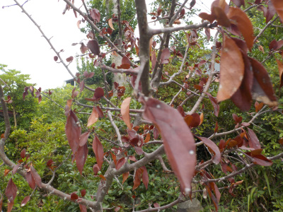
根元を何かの幼虫に食べられてしまい枯れました。
木も自然のものだし。虫も自然のものなので仕方のないことです。想定内です。
でもショックだな。
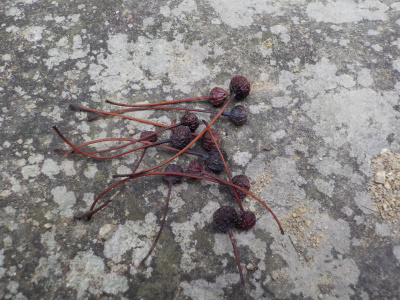
実を取りましたが、たぶん熟れていないんだろうな。
ひょっとしたら芽が出るかもしれないので。期待を込めて蒔きました。
2022/08/11

根元を何かの幼虫に食べられてしまい枯れました。
木も自然のものだし。虫も自然のものなので仕方のないことです。想定内です。
でもショックだな。

実を取りましたが、たぶん熟れていないんだろうな。
ひょっとしたら芽が出るかもしれないので。期待を込めて蒔きました。
2022/07/02
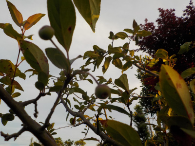
丸い小さな実が出来ました。
種を採って種蒔きしたいと思っていますが、収獲出来るかな？
実が熟れるのが10月とか11月らしいです。鳥に食べられたり強風で落下したりしないといいんですけど。
2022/04/24
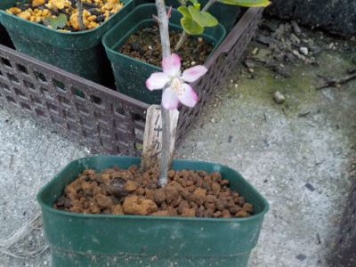
花は咲いていますが、この枝に根っこはありません。
去年も根っこ無しで葉っぱが出ましたが、それと同じで花が咲いたんだと思います。
2022/04/09
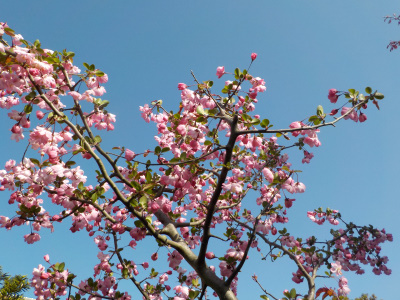
ハナカイドウは毎年挿し木を失敗しているので、今年はもう止めようと思っていました。
でも花を見たら、今年も挿し木してみよう！って気になりました。
2021/07/03
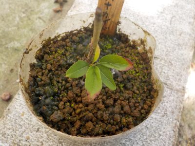
葉っぱが増えて5枚になりました。
葉色が暗いので、若葉って感じがしません。
2021/05/29
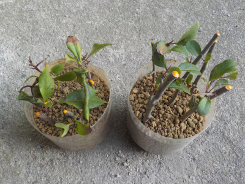
今年の挿し木はどうなるかな。
2021/05/15
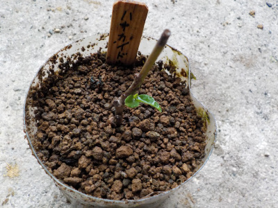
去年の4月に挿木したハナカイドウから芽が出ました。
挿木に成功したんだと思い植替えしようとしたんですが、根っこがありませんでした。
枝に残っている栄養だけで発芽したみたいです。
植物の生命力って凄いです。
この先、この挿し木はどうなるんでしょうね。
今生きてるってことは今後も生きそうだし、1年経っても根が出なかったってことは今後も根が出ない可能性があります。
2021/03/28
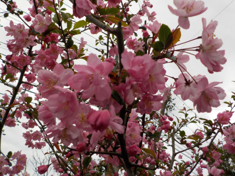
桜も早かったですが、他の花も今年は早いですね。
早いからって別にいいことも悪いこともないですけど。
3月末ってまだ寒かったり忙しかったりするので、桜もそうですが4月に咲いた方がいいかなー。
2020/07/12
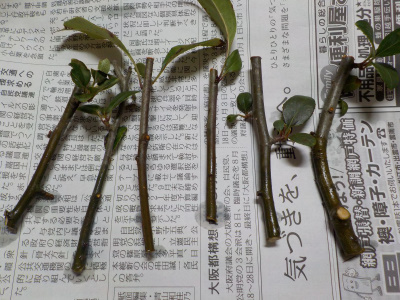
剪定した枝を使って水差しをします。
どうなるか分からないですけど、水差しって鉢とか土を用意しなくていいので楽ですよね。
2020/06/07
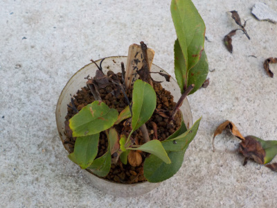
1月以上経っているので成功するかも？
ちょっと期待がもてますね。
2020/04/25
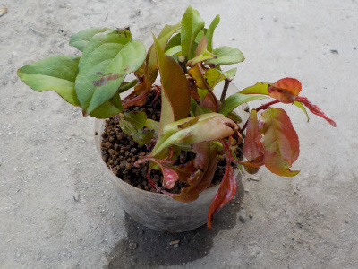
成功率が低いようですが挿し木しました。
ペットボトルの密閉挿しです。
2020/04/05
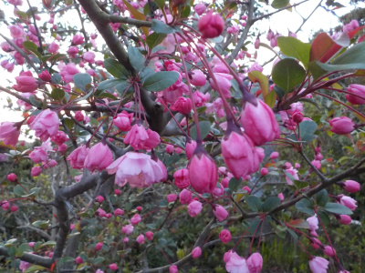
綺麗ですね。
花が終わったら挿し木をしようと思っています。
種子も蒔いてみたいな。
畑仕事じゃないよ。